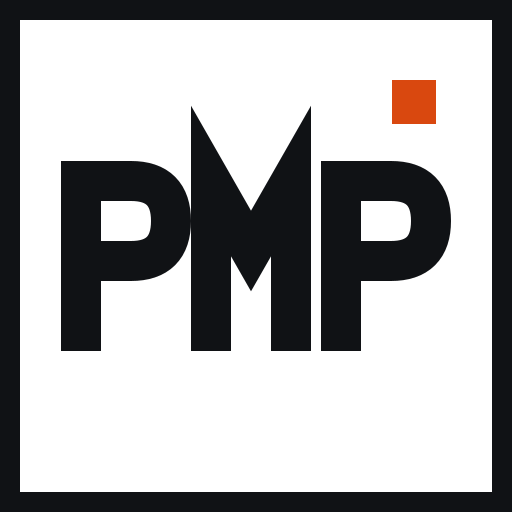
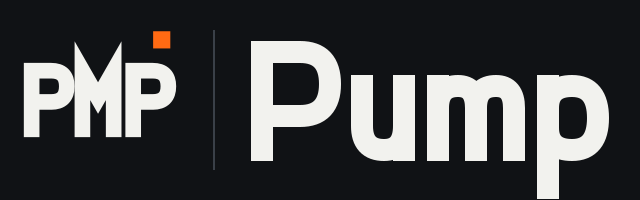
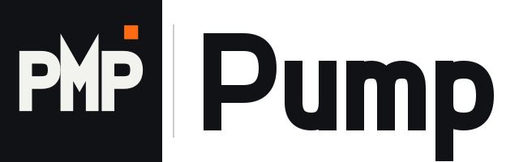

Manual da marca
O Pump trata o dia do personal como um painel de partidas: tudo em ordem de horário, e o que muda acende e fica aceso até alguém ver. A marca, as cores e as letras vêm desse painel e do cartão de embarque.
Marca
O código PMP, desenhado em traço reto como as letras de um painel, com o quadrado laranja de "mudou" no canto. O quadrado é a única cor da marca e repete a função dela no app.







Ícone do app instalado: icon.svg (o mesmo símbolo escuro). Espaço livre em volta da marca: no mínimo a largura do quadrado laranja. Tamanho mínimo: 24 px.
Cores e a função de cada uma
Duas cores de sinal, cada uma com um trabalho só. Todo o resto é preto, branco e cinza do painel.
#101215Fundo do tema escuro.#0A0B0DMenu lateral, barra de abas e barra do topo, nos dois temas.#F2F2EETexto no escuro e botão principal.#FFFFFFFundo do tema claro e dos cartões tipo passe (treino do dia, convite).#FF6A13 · claro #D9480FSó para o que mudou ou precisa do personal: remarcou, cancelou, atrasou, sumiu.#3DDC84 · claro #0E8A4ASó para o que está acontecendo agora: a próxima aula, a série atual, o registro mais recente.Letras
Números sempre alinhados em coluna (tabulares). Nada de letras inclinadas; a hierarquia vem de tamanho, largura e peso.
Situações
Cada situação tem uma marca fixa: contorno em repouso, cheia quando está acontecendo, riscada quando já passou.
| Hora | Aluno | Situação |
|---|---|---|
| 09:00 | Juliana CostaEmagrecer | PRÓXIMA |
| 10:30 | Pedro AlvesEmagrecer | CONFIRMADA |
| 18:00 | Carla BentoGanhar massa | REMARCOU · ERA 16:00 |
| 19:00 | Lucas PradoGanhar massa | CANCELOU |
| 07:00 | Marina SouzaDefinição | FEITA |
Nomes do exemplo de demonstração.
Regras
Faça
- Ordene por horário: o painel se lê de cima para baixo.
- Use laranja só para mudança e verde só para agora.
- Cantos retos, linhas finas e tabelas no lugar de cartões soltos.
- Deixe a mudança acesa até o personal tocar em Visto.
Não faça
- Fantasia de aeroporto: avião, portão, voo, embarque escrito.
- Botões em pílula, brilho, vidro, degradê ou sombra dura.
- Faixa colorida grossa na lateral de cartões e alertas.
- Uma terceira cor de destaque, ou laranja e verde como enfeite.